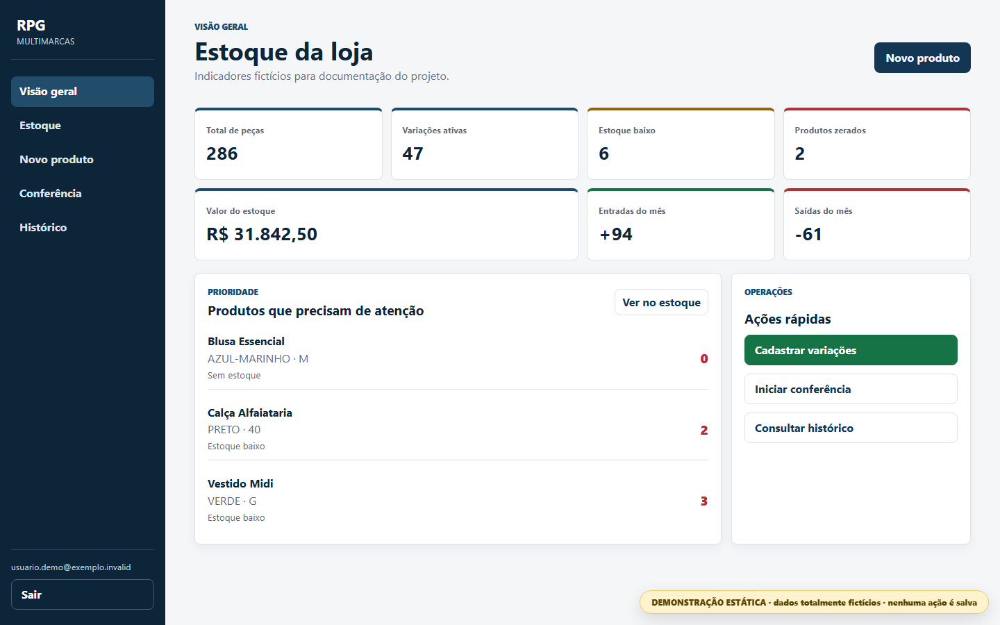

Demonstração navegável01 / Sistema web
Controle de Estoque RPG Multimarcas
Aplicação autenticada para cadastrar variações de produtos, controlar movimentações e realizar conferência física sem perder o histórico.
ProblemaPlanilhas não protegiam contra estoque negativo, alterações concorrentes ou perda de rastreabilidade.
EntregaInterface responsiva, Supabase, operações transacionais, auditoria e conferência por categoria.